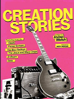
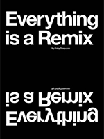

Билли Айлиш должна быть одним из самых успешных подростков всех времен. С шестью Грэмми, более 75 миллионами подписчиков
в Instagram и аншлагом шоу по всему миру было неизбежно, что у мрачной поп-звезды будет собственная документалка. «Билли
Айлиш: Слегка размытый мир» расскажет о буднях певицы, а записи ее альбома, о том, что творится в хорошенькой головке. В
дневнике девушки посреди мрачных текстов живут маленькие монстрики. Насколько они реальны?

Фильм рассказывает незабываемую историю о печально известном главе музыкального лейбла Creation Records Алане Макги и о
том, как один списанный молодой выскочка из Глазго поднялся, чтобы безвозвратно изменить лицо британской культуры.
Респект» — канадско-американская биографическая драма режиссёра Лисль Томми 2021 года. Картина основана на жизни
известной американской соул-певицы Ареты Франклин.

В фильме приводятся примеры заимствований в музыкальной индустрии. От записи каверов и интерпретаций старых песен более
молодыми музыкантами до расцвета хип-хопа, когда сэмплирование буквально взорвало музыкальную индустрию.